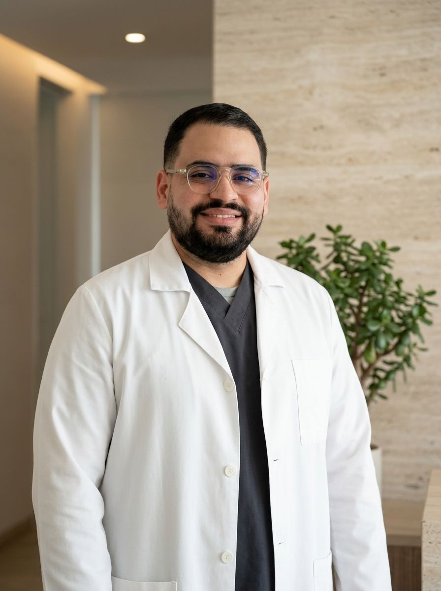
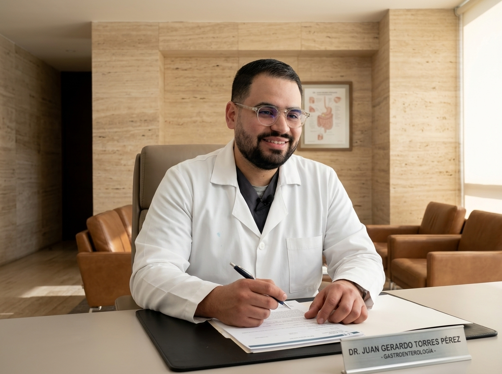
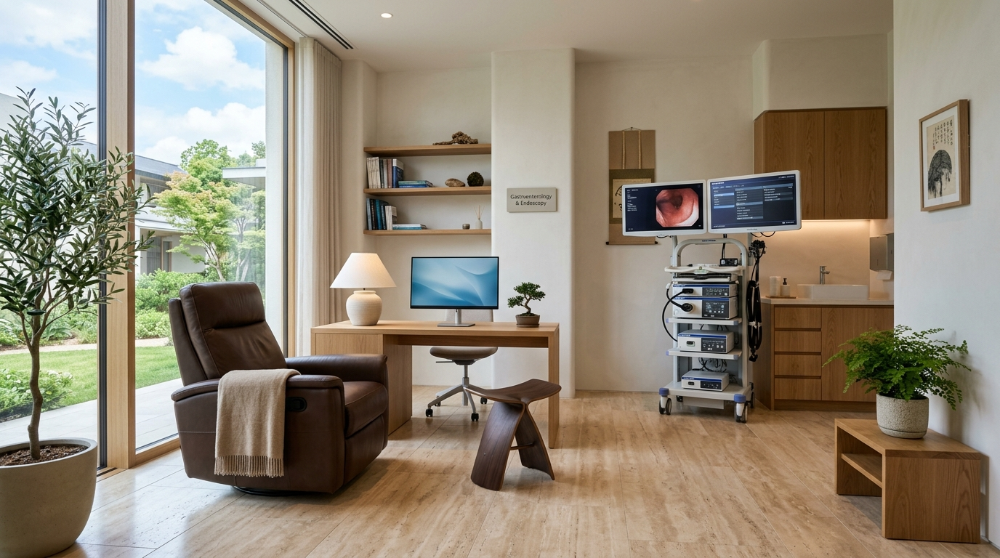

Dr. Juan Torres
GastroenterologíaSalud digestiva integral guiada por precisión diagnóstica y confort absoluto.

Diagnóstico certero de gastritis, reflujo, Helicobacter pylori y colon irritable. Video endoscopias y colonoscopias realizadas bajo sedación consciente asistida: 100% indoloras, seguras y sin recuerdos molestos. Consultas presenciales en Caracas (C.C. San Ignacio) y Valencia.
¿Qué síntoma digestivo afecta tu calidad de vida?
Selecciona tu principal malestar para conocer el protocolo clínico y estudio diagnóstico recomendado por el Dr. Juan Torres Pérez.
Protocolo Sugerido: Video Endoscopia Superior con Sedación Asistida
Permite evaluar el grado de esofagitis, descartar hernia hiatal y tomar biopsia indolora para verificar la presencia de Helicobacter pylori.
La ventaja de una visión médica dual
La gastroenterología moderna exige no tratar un órgano de forma aislada, sino comprender la salud del paciente como un sistema biológico interconectado.
Internista + Gastroenterólogo
Al contar con ambas especialidades universitarias oficiales, el Dr. Juan Torres analiza la interacción de tus síntomas digestivos con la presión arterial, diabetes, metabolismo hepático y los medicamentos que consumes diariamente.
Estudios 100% Sin Dolor
Eliminamos el miedo a la endoscopia y colonoscopia. Mediante sedación consciente administrada por anestesiólogo, te duermes plácidamente durante 15 minutos y despiertas sin asfixia, dolor ni recuerdos traumáticos.
Cura de Raíz vs. Alivio Pasajero
Rechazamos la prescripción indefinida de protectores gástricos sin diagnóstico. Buscamos y tratamos la causa microbiológica o funcional real (*Helicobacter pylori*, disbiosis o dismotilidad) para restaurar tu bienestar definitivo.
Procedimientos Clínicos & Endoscopia Avanzada
Tecnología de alta definición óptica para diagnósticos exactos y tratamientos mínimamente invasivos.
Video Endoscopia Digestiva Superior (Gastroscopia)
Estudio endoscópico de alta definición bajo sedación asistida indolora para evaluar esófago, estómago y duodeno, diagnosticando gastritis, úlceras, hernia hiatal y toma de biopsia para *H. pylori*.
Colonoscopia Total con Polipectomía
El estándar de oro mundial para el descarte y prevención del cáncer de colon. Permite visualizar el intestino grueso y extirpar pólipos premalignos en el mismo procedimiento.
Endoscopia + Colonoscopia en una Sola Sesión
Protocolo completo que evalúa todo el tracto digestivo bajo una única sedación, ahorrando tiempo de preparación y optimizando la seguridad del paciente.
Tratamiento Médico de Helicobacter pylori
Esquemas antibióticos guiados y ajustados según guías internacionales de consenso para asegurar la eliminación de la bacteria sin recaídas ni resistencias.
Reflujo Gastroesofágico (ERGE) & Hernia Hiatal
Diagnóstico anatómico y funcional para detener el daño por ácido en el esófago, eliminar la tos nocturna y evitar complicaciones crónicas (Esófago de Barrett).
Gastritis Crónica Erosiva & Dispepsia
Abordaje clínico de la digestión lenta, pesadez post-comida y dolor epigástrico para recuperar la tolerancia alimentaria normal sin dolor.
Síndrome de Intestino Irritable (SII / Colon Irritable)
Manejo del dolor abdominal espasmódico, gases y variaciones de evacuación mediante regulación de la microbiota y modulación del eje intestino-cerebro.
Hígado Graso (Esteatosis) & Salud Hepática
Evaluación médica y metabólica para revertir la infiltración grasa en el hígado, normalizar transaminasas y prevenir la progresión a fibrosis o esteatohepatitis.
Evaluación Médica Integral & Pre-Operatorios
Valoración clínica global del adulto, control de comorbilidades crónicas y cálculo de riesgo quirúrgico cardiovascular y pulmonar pre-operatorio.
Consultas y Procedimientos en Caracas & Valencia
Instalaciones modernas equipadas con torres endoscópicas de alta definición y quirófanos ambulatorios certificados.
Centro Comercial San Ignacio
Municipio Chacao / La Castellana, Caracas, Venezuela.
Torre Médica Especializada
Valencia, Estado Carabobo, Venezuela.

Dr. Juan Torres Pérez
Médico Cirujano (UC) | Especialista en Medicina Interna (UCV) | Especialista en Gastroenterología (UCV)
Formado en los centros hospitalarios y universitarios más prestigiosos de Venezuela, el Dr. Juan Torres Pérez culminó su especialidad en Medicina Interna en el emblemático Hospital Universitario Dr. Miguel Pérez Carreño (UCV) y posteriormente su subespecialidad en Gastroenterología en la Universidad Central de Venezuela.
Su práctica médica se distingue por combinar el rigor del diagnóstico microscópico y endoscópico con una atención empática, cercana y desprovista de prisas, asegurando que cada paciente comprenda con total claridad el origen de sus síntomas y el camino hacia su recuperación.
Compromiso con el Paciente:
"En mi consultorio no hay procedimientos traumáticos ni recetas estandarizadas. Cada estudio se realiza con la máxima delicadeza y sedación confortable para que recuperar tu salud digestiva sea un proceso sereno y seguro."
Espacios diseñados para tu tranquilidad y seguridad
Nuestras suites de consulta y unidades de endoscopia integran tecnología óptica de última generación con una atmósfera relajante, climatizada y con estricto apego a protocolos internacionales de bioseguridad.

La experiencia de nuestros pacientes
Historias reales de personas que recuperaron su bienestar digestivo con el Dr. Juan Torres Pérez.
"Le tenía pánico a la endoscopia por una mala experiencia previa en otra clínica. El Dr. Juan Torres me explicó todo con una calma increíble. Con la sedación me quedé dormida en segundos y cuando desperté ya estaba lista, sin dolor de garganta ni mareos."
"Tenía 2 años con ardor de estómago constante tomando omeprazol sin mejoría. El doctor me diagnosticó Helicobacter pylori resistente y me cambió el tratamiento farmacológico. A las dos semanas ya no sentía acidez. Su visión como internista marca la diferencia."
"Fui a su consulta en el C.C. San Ignacio para mi colonoscopia preventiva de los 50 años. Me detectó un pólipo pequeño y lo retiró en el mismo momento sin dolor alguno. La tranquilidad de saber que preveniste algo grave no tiene precio."
Recupera tu salud digestiva hoy
Selecciona tu motivo de consulta y sede de preferencia para coordinar tu cita directamente con nuestra coordinación médica vía WhatsApp o llamada telefónica.
• Caracas: Centro Comercial San Ignacio, Chacao.
• Valencia: Torre Médica Especializada, Edo. Carabobo.
Lunes a Viernes previa cita coordinada.
Respuestas médicas a tus dudas frecuentes
No. Todos nuestros estudios endoscópicos se efectúan bajo sedación consciente asistida por médico anestesiólogo. Te duermes plácidamente durante los 15-20 minutos que dura el procedimiento, no sientes asfixia, náuseas ni dolor y despiertas completamente descansado.
El día anterior al estudio se realiza una dieta líquida clara y se toma una solución evacuante recetada por nuestro equipo médico para limpiar completamente las paredes del colon. Esto garantiza que el doctor pueda visualizar con nitidez milimétrica cualquier lesión o pólipo pequeño.
El método de mayor precisión es la toma de una micro-biopsia gástrica durante la endoscopia digestiva (test de ureasa rápida o estudio histopatológico). También existen pruebas no invasivas como el test de aliento con urea marcada o antígenos en heces para seguimiento post-tratamiento.
Sí. Tras la consulta o procedimiento endoscópico, se entrega un informe médico detallado con código CIE-10, fotografías endoscópicas a color en alta definición y factura profesional válida para el trámite de reembolso con pólizas de seguros nacionales e internacionales.
La información contenida en este sitio web tiene carácter estrictamente educativo, orientativo e informativo. No constituye prescripción médica directa ni sustituye la consulta presencial e individualizada con el Dr. Juan Torres Pérez o su médico especialista. Ningún estudio endoscópico invasivo o esquema farmacológico se administra sin valoración clínica previa y consentimiento informado.
Dr. Juan Torres Pérez
Coordinación Médica en línea¿En qué consulta o procedimiento endoscópico podemos orientarte hoy?